import sacco.gui.*;
SFrame API
SButton API
FlowLayout API
GridLayout API
BorderLayout API
So far we’ve added a few buttons to an SFrame and they’ve all been thrown into the window as a grid. This is how an SFrame arranges its items by default.
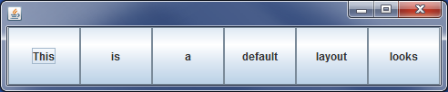
We’re not stuck with things this way. If we look at the SFrame API, there’s a
method named setLayout(LayoutManager manager)
This method is a little different. It can take ANY object that qualifies as a
LayoutManager. There are 3 main ones that we care about: FlowLayout, GridLayout,
BorderLayout
This is the default
LayoutManager for SFrames. It makes no attempt to resize the elements inside it.
Create a class named LayoutManagerPrograms and add the
following method to it (don’t forget to import sacco.gui.*;)
public static void firstFlowLayout()
{
SFrame frame = new SFrame("First FlowLayout");
//Construct a Flowlayout object to set the frame's layout
FlowLayout flow = new FlowLayout();
//Line A: Add Code Here
frame.setLayout(flow);
//Construct and add four buttons to the frame
SButton button = new SButton("Check");
frame.add(button);
button = new SButton("Out");
frame.add(button);
button = new SButton("The");
frame.add(button);
button = new SButton("FlowLayout");
frame.add(button);
//set size and view
frame.setSize(300,150);
frame.setVisible(true);
}
This is very similar to a project that you’ve done, but there’s an extra step where the FlowLayout object is created and then set as the layout. If you look at the FlowLayout API, there’s really only a few things that can be done to change the layout. Mainly the alignLeft() , alignRight(), and alignCenter() methods.
The default LayoutManager is aligned center. In order to change that, we are going to create a new FlowLayout object and modify it to be aligned differently. Go to the line of code that says //Line A: Add Code Here and add a line that calls layout’s alignLeft method. This should set that attribute of the FlowLayout right before the frame is told to use that layout.
Test your code and make sure that the buttons are all aligned to the left.
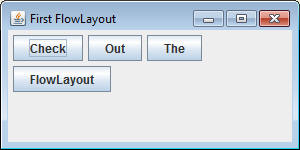
Add a method with the following header:
public static void secondFlowLayout()
Write the method so that it recreates the gui below. When run you should not have to resize it to get it to be the right size.
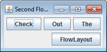
A GridLayout object is used to organize elements in a grid form. Start by copy and pasting the method below.
| NOTICE: For brevity, I have started combining statements. Previously
I’ve used a variable named button to hold the SButton object. SButton button = new SButton(“A”); frame.add(button); But Since I don’t really use button later, it can really be shortened to the following: frame.add(new SButton(“A”)); This way the button variable is no longer acting as the middle man. This will not always be the case. Many times you are going to want to keep track of the buttons, making a variable necessary. |
public static void firstGridLayout()
{
SFrame frame = new SFrame("First GridLayout");
//Line B: Add Code Here
frame.add(new SButton("A"));
frame.add(new SButton("B"));
frame.add(new SButton("C"));
frame.add(new SButton("D"));
frame.add(new SButton("E"));
frame.add(new SButton("F"));
frame.setSize(300,150);
frame.setVisible(true);
}
When run, it should look like this:
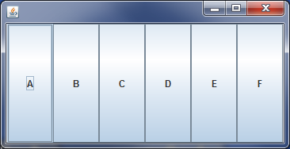
This is already a GridLayout, which is the default layout for SFrames, but let's make it more of a Grid.
If you look at the GridLayout API, you’ll see that the only way to construct
a GridLayout is by giving it two parameters. Go to the line that says //Line B:
Add Code Here and construct a new GridLayout object with 3 rows and 2 columns
and store it into a new variable named grid (Look at the GridLayout API to see
what kind of Constructor it has).
After you’ve constructed the GridLayout, call frame’s setLayout method with grid
as the parameter. Now run the method. It should look as follows:
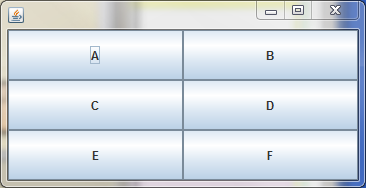
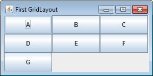
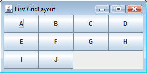
So it seems that first a new Row was added, but when that was full a new Column
was added, causing a very confusing result. The moral of the story is that you
should really never be adding more items to a GridLayout than you have made room
for. Multiplying the number of rows times the number of columns will tell you
the max.
Create a method with the following header:
public static void secondGrid()
This method should recreate the gui below. Use a size of 250x250.
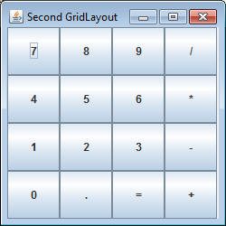
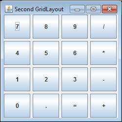
The BorderLayout is the most complex of the layouts. It divides the area up into 5 zones. To demonstrate those zones start with the following code, which creates 5 buttons that are labeled after the 5 zones.
public static void firstBorderLayout()
{
SFrame frame = new SFrame("First BorderLayout");
//Line C: Add code here
SButton north = new SButton("North");
SButton south = new SButton("South");
SButton east = new SButton("East");
SButton west = new SButton("West");
SButton center = new SButton("Center");
frame.add(north);
frame.add(south);
frame.add(east);
frame.add(west);
frame.add(center);
frame.setSize(400,300);
frame.setVisible(true);
}
Run the method. Again it’s only a FlowLayout at the moment. Go to Line C and
set the Layout to a BorderLayout by saying frame.setLayout( new BorderLayout()
);
Run the program this time and you’ll run into a surprise. The top of the error
message should say java.lang.IllegalArgumentException: BorderLayouts are not
appropriate here. This occurs because the add method that you’ve used won’t work
for the BorderLayout. When adding to a BorderLayout there’s a second method that
also requires you to tell it which zone to place it. The way that you call it is
a little unique. There is a static variable in the BorderLayout class for each
zone.
find the line that says: frame.add(north);
change it to say: frame.add(BorderLayout.NORTH, north);
This is a legal add for a BorderLayout. Change the other 4 adds to follow this
same format. Then run the method and observe the five zones:
North/South: These zones keep their natural height and stretch their width to match the width of the frame
East/West: These zones keep their natural width and stretch their height to match the height of the frame (minus the height of the North and South zones)
Center: This zone stretches both its height and width to fill in any zone that has nothing added to it.
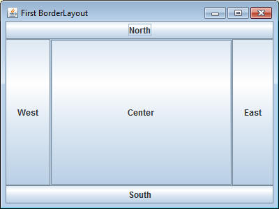
You don’t have to fill every single zone of a BorderLayout. Add the following methods and code them to create the described layout.
public static void secondBorderLayout(): This method should create a frame
that only has buttons at the Center, North, and West of a 400x300 frame
public static void
thirdBorderLayout(): This method should create a frame that
only has buttons at the Center and East of a 450x200 frame
public static void
fourthBorderLayout(): This method should replicate the frame
below:
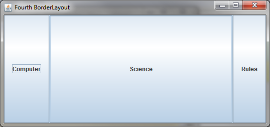